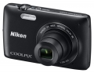

无忌
器材库
全部器材
产品年表
名词百科
榜单
器材库
> 不可换镜头数码相机 > COOLPIX S4400

尼康
COOLPIX S4400
分类
不可换镜头数码相机
点评
0 条
图片
0 张
评测
0 篇
采用2005万有效像素、1/2.3英寸CCD图像传感器，6倍光学变焦镜头（35mm等效焦距为26-156mm），机身背面配备了约46万像素的3.07英寸显示屏。
产品类型
不可换镜头数码相机
综合评分
暂无评分
无忌评测
暂无评测
规格参数
网友点评
(0)
产品图 / 样片
(0)
评测文章
(0)
规格总览
发布日期
2013-03-05
影像规格
影像传感器
CCD
影像传感器尺寸
1/2.3英寸
总像素
2048万
有效像素
2005万
静态图像尺寸
20M（高）[5152 x 3864（精细）]20M [5152 x 3864]10M [3648 x 2736]4M [2272 x 1704]2M [1600 x 1200]VGA [640 x 480]16:9 (14M) [5120 x 2880]
画幅比
4:3, 16:9
短片尺寸
HD 720p（默认设置）：1280 x 720/16:9/约每秒30帧、VGA：640 x 480/4:3/约每秒30帧、QVGA：320 x 240/4:3/约每秒30帧
短片格式
AVI, Motion-JPEG
防抖系统
镜头位移
镜头和对焦
镜头结构
5片/5组
焦距
4.6mm-27.6mm
等效35mm画幅焦距
26mm-156mm
最大光圈
f/3.5-f/6.5
光学变焦
6倍
数码变焦
4倍
最近对焦距离
[W]：约50cm到无穷远，[T]：约100cm到无穷远cm, 微距5cm
自动对焦系统
对比检测AF
曝光控制
测光模式
中央重点测光, 多分区评价测光, 点测光
曝光模式
P（程序自动曝光）
场景模式
场景自动选择器、人像、风景、运动、夜间人像、聚会/室内、海滩、雪景、落日、黄昏/黎明、夜间风景、特写、食物、博物馆、焰火表演、黑白复制原稿、绘图、逆光、全景辅助、宠物像
快门速度
1/2000-1秒
曝光补偿
±2EV以1/3EV级调整
ISO感光度
80, 100, 200, 400, 800, 1600, 自动
白平衡
自动
自拍
10秒, 2秒
连拍
0.9fps,最多6张
拍摄模式
自动、场景、特效、智能人像
闪光灯
内置闪光灯
固定
闪光模式
自动, TTL
闪光涵盖范围
[W]：0.5-4.5米 [T]：1.0-2.4米
取景规格
LCD类型
TFT LCD
LCD尺寸
3.0英寸
LCD像素
46万
视野率
97%
文件输入/输出
内置存储容量
71MB
存储卡
SD/SDHC, SDXC
数据接口
高速USB
视频/音频接口
AV 输出
电源
电池
可充电的锂离子电池EN-EL1
外观
颜色
银色, 黑色, 紫色
尺寸
95.5 x 58.9 x 20.8mm
重量
140g
该产品暂无存档的网友点评
该产品暂无存档的产品图
评测 / 相关文章
该产品暂无存档的评测文章
相关文章
［资讯］尼康COOLPIX S4400
（原站已下线）
［资讯］尼康 COOLPIX S4400 官方样片欣赏
（原站已下线）
［资讯］尼康发布轻便型COOLPIX S4400
（原站已下线）